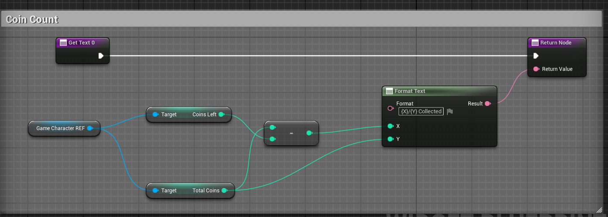

Elevator
Project Status: Finished
Project Type: Solo Project
Project Duration: 1 day
Software Used: Unreal Engine
Languages Used: Blueprints (c++)
Primary Role(s): UI designer/Programmer, Git master
Team: 1 dev
About Elevator
"Coin Collector" was a solo project to develop an engaging game that would inspire space travel and astronomy interest amongst a younger audience. It marked the first partnership between Game Developers and Game Artists, with each group comprising two developers and four artists. But our group had an extra dev who joined the project at a later date. This was also the second time we worked with sprints if i recall correctly.
My Features
- Elevator Buttons
- Elevator Floor Check
- Automatic Doors Elevator
Software Used
- Blender
- mixamo
- Trello
Intro
To start this project off, I wanted to create a simple game
too learn more about Unreal Engine.
So I decided with a Coin Collector game.
I decided just collecting coins would be too easy.
so I created a little win/lose condition to the game.
If the timer runs out and you haven't colllected all the coins
you lose the game.
Sprint 0: Initial research phase.
Sprint 1 and 2: Concentrated on creating a
playable game.
Sprint 3: Finish & Present the product on a
project market.
Elevator Buttons
In the snippet above I created a blueprint which
checks if all the floors are ingame before you can interact with the Elevator.
If this is true each number you press the elevator will go too. It will also
skip numbers if those aren't in the way of a higher number. Like pressing floor 4 when
you are on floor 1 it will instantly go there. unless someone else has pressed any other number
between 1 and 4 it will go to the highest floor pressed.
Development
Biggest issue I was noticing was that each time I pressed a number and error would pop up. Almost like the game couldn't find the floor numbers. So I created an array were it could store all the numbers that are currently ingame. Problem is it doesn't automatically check the floor numbers. It only checks the manaully assigned floor numbers resulting in errors when you press an unassigned floor number.
Elevator Floor Check
Here you can see the coins I made that can be collected.
I gave it a fixed rotation which also highlights that the
coins can be collected.
Coin Counter

This is the blueprint I created so I can check the amount of coins
collected and the coins that needed to be collected. I did this using the
total coins and coins left.
My Test Scene:
Here i created a scene to propperly test out
simple things such as Bridge interactions, coin collecting
and hitbox testing around the third person character. In the clip shown
here I only focused on testing the BoxTrace around my ThirdPersonCharacter
which as you can see turns green when collision is true.
The navmesh was tough to figure out, and in the end i didn't completely get it working with the enemies not moving from their position. Atleast i managed to figure out how the following Attack Function
Coin collection in action

The Enemy checks every frame wether the
player is in Sight- or Attack range.
So as soon the player gets within sight
range, the enemy starts looking at you.
And when you enter the Attack Range the
enemy shoots a bullet at you every 3
seconds.
Conclusion
By the end of this little project, i've improved my developing skills alot during the development process of this game. I learned how to work with blueprints more efficiently. This was a very fun experience and also very informational for me. I also realized that I enjoy working with Unreal Engine more then working with Unity this however does not mean I don't plan to continue with Unity. Overal this was a very cool project that got me into Unreal Engine.
Gameplay
This shows how the game ends when you have collected all coins.
The bridge opens up after you have collected all the coins it currently
doesn't have any noise that confirms you collected every coin.
but as soon as you press "E" on the bridge it will lower then you can walk
to the chest and open it too finish the game.